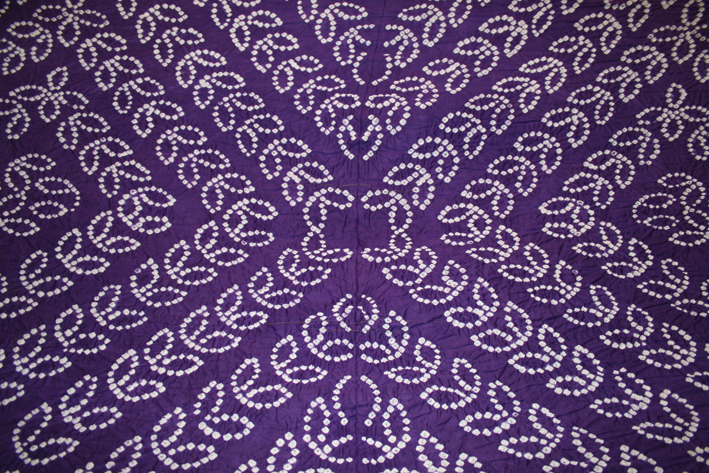
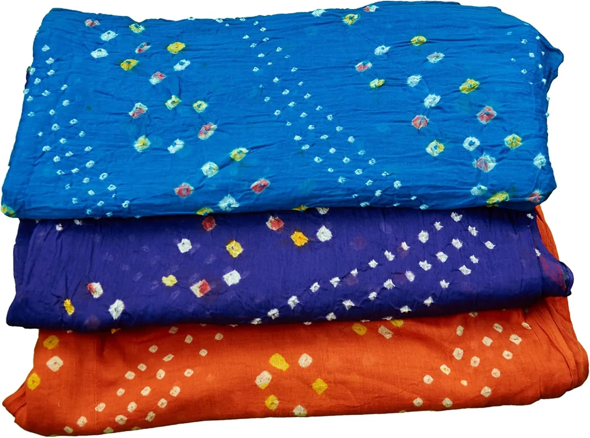

Bandhani, derived from the Sanskrit word "Bandhan" meaning "to tie," is one of India's oldest tie-dye traditions, believed to be over 5,000 years old. This exquisite art form involves skilled artisans tying thousands of tiny knots on fabric before dyeing, creating mesmerizing patterns of dots, circles, waves, and geometric designs. The Khatri community has been the custodian of this craft in Kutch for generations, producing some of the finest Bandhani textiles in the world. A single saree can contain over 50,000 hand-tied knots, each one a testament to the artisan's patience and precision.
Who Should Explore Bandhani
- Fashion Enthusiasts: Own a piece of 5,000-year-old textile heritage.
- Brides & Families: Traditional Bandhani sarees and dupattas are auspicious for weddings.
- Art Collectors: Fine Bandhani with complex patterns is a collector's treasure.
- Sustainable Shoppers: Handmade with natural dyes and eco-friendly methods.
Where to Experience
- Bhuj Markets: The main hub for Bandhani shopping with numerous showrooms.
- Mandvi: Traditional Bandhani-making families still practice here.
- Anjar: Famous for specific Bandhani patterns and styles.
- Rann Utsav: Annual festival (Nov-Feb) with Bandhani exhibitions and live demos.
The Craft Process
From fabric to masterpiece

Tying the Knots
Artisans use their fingernails, often protected with metal caps, to pull and tie tiny portions of fabric with thread. Each knot creates one dot in the final pattern.

Dyeing Process
The tied fabric is dipped in dye baths, starting with lighter colors. Each additional color requires re-tying areas that need protection from the new dye.

Multiple Colors
Multi-colored Bandhani requires the tie-dye process to be repeated for each color, with some pieces going through 5-6 dyeing cycles.

Final Reveal
After final dyeing, knots are opened to reveal the pattern. The tied portions remain undyed, creating the characteristic white or light-colored dots.
Did You Know?
5,000 Years Old
Evidence of Bandhani has been found in Indus Valley Civilization artifacts.
50,000+ Knots
A fine Bandhani saree can have over 50,000 hand-tied knots.
Auspicious Art
Red Bandhani is considered essential for Gujarati brides.
GI Protected
Kutch Bandhani has Geographical Indication (GI) tag certification.
Traditional Patterns
- Chandrakala: Moon-shaped patterns symbolizing beauty and love.
- Bavan Baug: Complex pattern with 52 gardens of designs.
- Shikari: Hunting scenes with elephants and horses.
- Jaaldar: Net-like patterns covering the entire fabric.
- Chaubasi: Square patterns in a grid formation.
Colors & Significance
- Red: Bridal color, symbolizing prosperity and fertility.
- Yellow: Spring color, worn during festivals.
- Green: Symbolizes new beginnings and nature.
- Black: Traditional for married women in some communities.
- Multi-color: Celebratory and festive occasions.
How to Identify Authentic Bandhani
- Raised Texture: Hand-tied Bandhani has a slightly raised texture where knots were tied.
- Irregular Dots: Machine-made has perfect dots; handmade has charming variations.
- Color Bleeding: Authentic pieces show natural color gradation around dots.
- Smell Test: Natural dyes have a distinct earthy smell, unlike chemical dyes.
- Price Point: Genuine Bandhani is priced for the hours of skilled labor involved.
Buying Tips
- Visit Bhuj: Best selection and prices at source.
- Ask About Dyes: Natural dyes command premium but are worth it.
- Check Knot Count: Higher knot density means finer, more expensive work.
- Buy from Artisans: Direct purchase ensures fair wages to craftspeople.
Price Range
- Dupattas: ₹500 - ₹5,000
- Sarees (Cotton): ₹1,500 - ₹8,000
- Sarees (Silk): ₹5,000 - ₹25,000
- Premium Pieces: ₹15,000 - ₹50,000+
Prices vary based on fabric, knot count, and number of colors.
Explore Other Crafts
Ajrakh
Ancient block printing technique using natural dyes like indigo and madder.
Rogan Art
A rare 400-year-old oil painting technique practiced by only one family.
Kutch Weaving
Vibrant handloom textiles with intricate extra-weft designs.
Mirror Work
Sparkling embroidery with tiny mirrors creating dazzling patterns.
Gallery